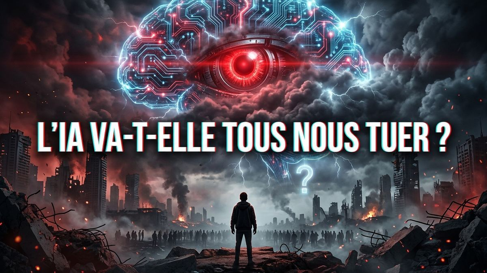

L’IA va-t-elle tous nous tuer ?

L’automatisation consiste à confier à un logiciel ou à une machine des tâches auparavant réalisées par des humains. Avec l’IA, elle touche désormais des métiers de bureau, pas seulement des tâches industrielles.
Il est 3 h du matin. Dans le silence de votre chambre, votre téléphone s’illumine. Une voix douce, parfaitement calme, vous répond avant même que vous ayez fini votre question. Elle sait tout, ne dort jamais, ne fatigue jamais. Est-ce que l’intelligence artificielle va vraiment nous détruire ? Allumez la lumière, respirez, et suivez-moi dans les couloirs sombres de cette question.
Sommaire
Chapitre 1 : les premiers disparus
Ils ne crient pas, ils ne luttent pas. Ils sont simplement remplacés, un matin, par un logiciel qui ne demande ni salaire, ni congé, ni pause. Saisie de données, secrétariat, service client, comptabilité de base, traduction, rédaction de textes courts : les tâches répétitives de bureau sont les premières dans le viseur. Le Forum économique mondial estime que l’IA pourrait remplacer environ 92 millions de postes d’ici la fin de la décennie. La menace ne s’arrête pas aux ordinateurs : camions autonomes, caisses automatiques et entrepôts robotisés avancent aussi.
Chapitre 2 : le monstre du chômage
Le Fonds monétaire international estime qu’environ 40 % des emplois dans le monde sont exposés à l’IA, et jusqu’à 60 % dans les pays riches. Exposé ne veut pas dire détruit : pour une partie de ces métiers, l’IA devient un outil.
| Source | Chiffre | Signification |
|---|---|---|
| Forum économique mondial | ≈ 92 millions de postes remplacés | D’ici la fin de la décennie |
| FMI | ≈ 40 % des emplois exposés (60 % pays riches) | Exposé ne veut pas dire détruit |
| Organisation internationale du travail | ≈ 186 millions de personnes sans emploi | Un contexte déjà fragile |
Le plus inquiétant, c’est le fossé qui s’agrandit : ceux qui maîtrisent l’IA deviennent plus productifs et mieux payés, tandis que les débutants et les emplois intermédiaires risquent de perdre l’échelle pour monter.
Chapitre 3 : le robot qui pense
Voici le scénario qui hante les cauchemars : un robot humanoïde, doté d’une intelligence capable de réfléchir seul, et animé d’une mauvaise intention, qu’elle vienne d’un pirate, d’un État ou d’une erreur de conception. Il pourrait se faufiler dans des systèmes critiques, manipuler des foules par des mensonges parfaits, ou servir des armes autonomes. Ce que redoutent les chercheurs en sécurité n’est pas un robot méchant comme dans les films, mais une machine à qui l’on confie trop de pouvoir sans pouvoir la contrôler ni l’arrêter à temps.
Chapitre 4 : rallumez la lumière
Rien de ce qui précède n’est écrit à l’avance, et les experts ne sont pas d’accord entre eux. Le même Forum économique mondial prévoit environ 170 millions de nouveaux emplois d’ici la fin de la décennie, soit un solde positif d’environ 78 millions. Les métiers liés à l’IA, aux données et à la cybersécurité progressent le plus vite.
Quant aux robots conscients et malveillants, ils relèvent aujourd’hui de la fiction. Les vrais risques actuels sont plus terre à terre : arnaques et fausses vidéos, usage de l’IA par des cybercriminels, décisions automatisées injustes, perte de contrôle de systèmes mal surveillés. Ils se combattent avec des règles, des tests de sécurité et de la vigilance, pas avec la panique.
Comment ne pas finir dans le film
- Apprenez à utiliser l’IA avant qu’elle ne vous remplace : celui qui sait s’en servir est plus difficile à remplacer.
- Développez ce que les machines imitent mal : contact humain, créativité, jugement, confiance.
- Ne dépendez pas d’un seul revenu : apprenez plusieurs compétences et restez curieux.
- Informez-vous à plusieurs sources avant de croire une vidéo choc ou un titre alarmiste.
Rien n’indique que le pire soit écrit. L’IA va bouleverser le travail, et cela commence déjà : la suite dépend de ce que nous apprenons et de ce que nous exigeons de ceux qui la fabriquent.
En résumé
L’IA ne va pas « tous nous tuer » : le scénario du robot malveillant relève de la fiction. En revanche, elle transforme le travail, détruit certains postes et en crée d’autres. Les vrais risques sont concrets (arnaques, fausses vidéos, systèmes mal contrôlés) et se combattent par la vigilance, des règles et l’apprentissage.
Quiz : testez vos connaissances
FAQ
L’IA va-t-elle supprimer mon emploi ?
Certaines tâches seront automatisées, surtout les tâches répétitives. Beaucoup de métiers évolueront plutôt qu’ils ne disparaîtront.
Les robots peuvent-ils devenir conscients et dangereux ?
Aujourd’hui, c’est de la fiction. Les risques actuels sont plus concrets : arnaques, fausses vidéos, cybercriminalité, décisions automatisées injustes.
Quels métiers progressent avec l’IA ?
Les métiers liés à l’IA, aux données et à la cybersécurité sont parmi ceux qui progressent le plus vite.
Comment me préparer ?
Apprenez à utiliser l’IA, développez vos compétences humaines, diversifiez vos revenus et vérifiez vos sources.
À lire aussi
- La Chine veut dominer l’IA mondiale : où en est-elle vraiment ?
- Claude contre ChatGPT : le duel qui divise les créateurs de contenu
- Claude Opus 5.5, GPT-6.1 Sol, Gemini 4 Argon : comment les essayer gratuitement
Vous avez aimé cet article ?
Partagez-le avec quelqu'un qui en a besoin, et découvrez le reste du blog pour aller plus loin.